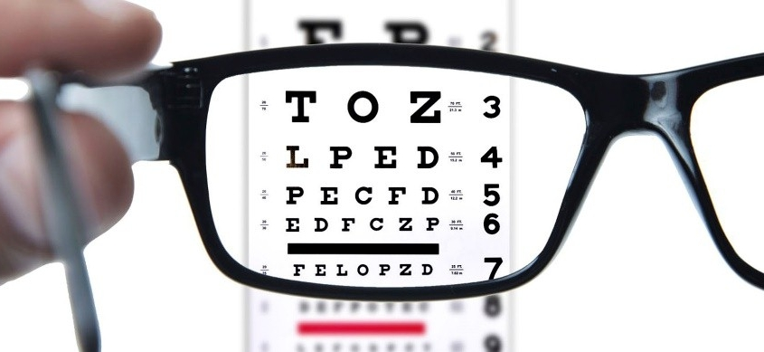

Los errores de refracción son la condición más común en la visión de las personas. Pueden causar dificultad para ver de lejos, de cerca o para enfocar objetos. La mayoría de estos defectos pueden ser corregidos con un par de lentes, y para obtener la graduación requerida, es necesario hacerse un examen de la vista. Puedes hacerte este examen sin costo alguno en todas nuestras clínicas. Una vez que tengas tu graduación, escoge entre uno de los diferentes modelos de armazón, que serán adaptados a tu graduación.
